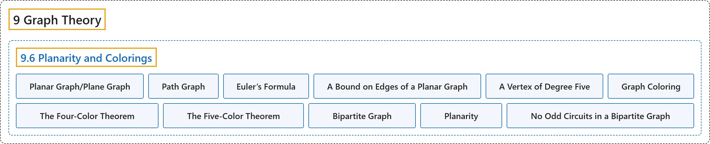

9.6 Planarity and Colorings
Classification

Glossary
| Term | Definition | 中文翻译 | Source |
|---|---|---|---|
| 9.6 Planarity and Colorings 平面性与着色 |
(No definition) | （无定义） | Doerr & Levasseur, n.d., section 9.6 |
| Planar Graph/Plane Graph 平面图／平面嵌入图 |
"A graph is planar if it can be drawn in a plane so that no edges cross. A drawing of a graph on the plane such that there are no edge crossings is called a planar embedding of the graph, or a plane graph for short." | 若图可以画在平面上使得没有边相交，则称它是平面图。图在平面上没有边相交的画法称为图的平面嵌入，简称平面图形。 | Doerr & Levasseur, n.d., Definition 9.6.1 |
| Path Graph 路径图 |
"A path graph of length \(n\text{,}\) denoted \(P_n\text{,}\) is an undirected graph with \(n+1\) vertices \(v_0, v_1,\dots, v_n\) having \(n\) edges \(\{v_i,v_{i+1}\}\text{,}\) \(i=0, 1, \dots, n-1\text{.}\)" | 长度为 \(n\) 的路径图，记作 \(P_n\)，是有 \(n+1\) 个顶点 \(v_0, v_1,\dots, v_n\) 和 \(n\) 条边 \(\{v_i,v_{i+1}\}\)，（\(i=0, 1, \dots, n-1\)）的无向图。 | Doerr & Levasseur, n.d., Definition 9.6.4 |
| Euler’s Formula 欧拉公式 |
"If \(G = (V, E)\) is a connected planar graph with \(r\) regions, \(v\) vertices, and \(e\) edges, then" | 若 \(G = (V, E)\) 是有 \(r\) 个区域、\(v\) 个顶点和 \(e\) 条边的连通平面图，则 | Doerr & Levasseur, n.d., Theorem 9.6.8 |
| A Bound on Edges of a Planar Graph 平面图边数的上界 |
"If \(G = (V, E)\) is a connected planar graph with \(v\) vertices, \(v\geq 3\), and \(e\) edges, then \(e \leq 3v - 6\)" | 若 \(G = (V, E)\) 是有 \(v\) 个顶点（\(v\geq 3\)）、\(e\) 条边的连通平面图，则 \(e \leq 3v - 6\) | Doerr & Levasseur, n.d., Theorem 9.6.10 |
| A Vertex of Degree Five 度数为五的顶点 |
"If \(G\) is a connected planar graph, then it has a vertex with degree 5 or less." | 若 \(G\) 是连通平面图，则它有一个度数不超过 5 的顶点。 | Doerr & Levasseur, n.d., Theorem 9.6.12 |
| Graph Coloring 图着色 |
"Given an undirected graph \(G = (V, E)\text{,}\) a “coloring function” is a function \(f\) from \(V\) into a set of colors \(H\) such that \(\{v_i,v_j\} \in E \Rightarrow f\left(v_i\right)\neq f\left(v_j\right)\text{.}\) If \(H\) has the smallest possible cardinality, its cardinality is called the chromatic number of \(G\text{,}\) \(\chi(G)\text{.}\)" | 给定无向图 \(G = (V, E)\)，“着色函数”是从 \(V\) 到颜色集 \(H\) 的函数 \(f\)，使得 \(\{v_i,v_j\} \in E \Rightarrow f\left(v_i\right)\neq f\left(v_j\right)\)。若 \(H\) 的基数是可能的最小值，则该基数称为 \(G\)， 的色数，记作 \(\chi(G)\)。 | Doerr & Levasseur, n.d., Definition 9.6.15 |
| The Four-Color Theorem 四色定理 |
"If \(G\) is a planar graph, then \(\chi (G)\leq 4\text{.}\)" | 若 \(G\) 是平面图，则 \(\chi (G)\leq 4\)。 | Doerr & Levasseur, n.d., Theorem 9.6.16 |
| The Five-Color Theorem 五色定理 |
"If \(G\) is a planar graph, then \(\chi (G)\leq 5\text{.}\)" | 若 \(G\) 是平面图，则 \(\chi (G)\leq 5\)。 | Doerr & Levasseur, n.d., Theorem 9.6.17 |
| Bipartite Graph 二分图 |
"A bipartite graph is a graph that has a 2-coloring. Equivalently, a graph is bipartite if its vertices can be partitioned into two nonempty subsets so that no edge connects vertices from the same subset." | 二部图是具有 2-着色的图。等价地，若图的顶点可以划分为两个非空子集，使得没有边连接同一子集中的顶点，则该图是二部图。 | Doerr & Levasseur, n.d., Definition 9.6.19 |
| Planarity 平面性 |
(context) "A graph is planar if it can be drawn in a plane so that no edges cross." | （语境）如果一个图可以画在平面上而使任何边都不相交，则该图是平面图。 | Doerr & Levasseur, n.d., section 9.6 |
| No Odd Circuits in a Bipartite Graph 二部图中没有奇回路 |
"An undirected graph is bipartite if and only if it has no circuit of odd length." | 无向图是二部图，当且仅当它没有长度为奇数的回路。 | Doerr & Levasseur, n.d., Theorem 9.6.21 |
References
Doerr, A., & Levasseur, K. (n.d.). Applied discrete structures. Retrieved October 28, 2026, from https://discretemath.org/ads/index-ads.html